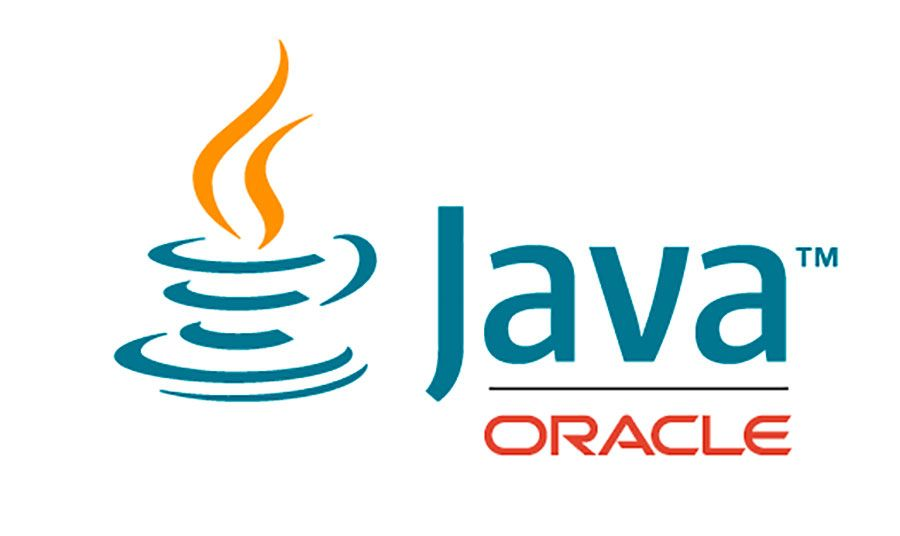
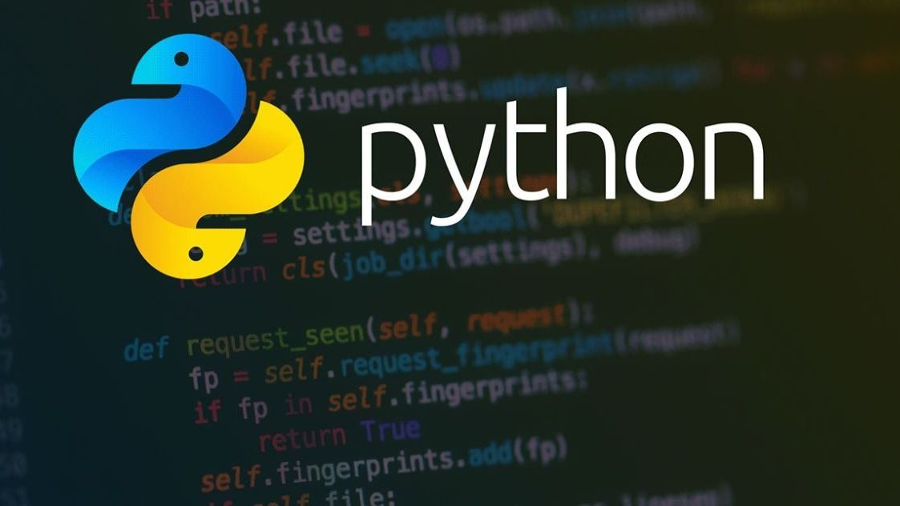
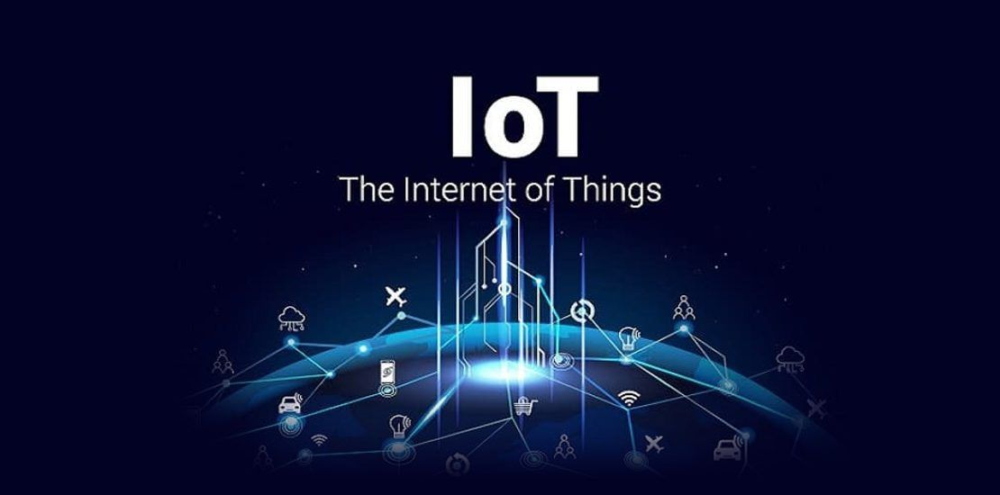

Java Programming
Java is a high-level, class-based, object-oriented programming language that is designed to have as few implementation dependencies as possible. It is a general-purpose programming language intended to let programmers write once, run anywhere (WORA),[17] meaning that compiled Java code can run on all platforms that support Java without the need for recompilation.[18] Java applications are typically compiled to bytecode that can run on any Java virtual machine (JVM) regardless of the underlying computer architecture. The syntax of Java is similar to C and C++, but has fewer low-level facilities than either of them. The Java runtime provides dynamic capabilities (such as reflection and runtime code modification) that are typically not available in traditional compiled languages. As of 2019, Java was one of the most popular programming languages in use according to GitHub,[19][20] particularly for client-server web applications, with a reported 9 million developers.[21] Java was originally developed by James Gosling at Sun Microsystems (which has since been acquired by Oracle) and released in 1995 as a core component of Sun Microsystems' Java platform. The original and reference implementation Java compilers, virtual machines, and class libraries were originally released by Sun under proprietary licenses. As of May 2007, in compliance with the specifications of the Java Community Process, Sun had relicensed most of its Java technologies under the GPL-2.0-only license. Oracle offers its own HotSpot Java Virtual Machine, however the official reference implementation is the OpenJDK JVM which is free open-source software and used by most developers and is the default JVM for almost all Linux distributions.
Mobile App Development with Flutter
Java is a high-level, class-based, object-oriented programming language that is designed to have as few implementation dependencies as possible. It is a general-purpose programming language intended to let programmers write once, run anywhere (WORA),[17] meaning that compiled Java code can run on all platforms that support Java without the need for recompilation.[18] Java applications are typically compiled to bytecode that can run on any Java virtual machine (JVM) regardless of the underlying computer architecture. The syntax of Java is similar to C and C++, but has fewer low-level facilities than either of them. The Java runtime provides dynamic capabilities (such as reflection and runtime code modification) that are typically not available in traditional compiled languages. As of 2019, Java was one of the most popular programming languages in use according to GitHub,[19][20] particularly for client-server web applications, with a reported 9 million developers.[21] Java was originally developed by James Gosling at Sun Microsystems (which has since been acquired by Oracle) and released in 1995 as a core component of Sun Microsystems' Java platform. The original and reference implementation Java compilers, virtual machines, and class libraries were originally released by Sun under proprietary licenses. As of May 2007, in compliance with the specifications of the Java Community Process, Sun had relicensed most of its Java technologies under the GPL-2.0-only license. Oracle offers its own HotSpot Java Virtual Machine, however the official reference implementation is the OpenJDK JVM which is free open-source software and used by most developers and is the default JVM for almost all Linux distributions.
Machine Learning with Python
Machine learning (ML) is the study of computer algorithms that can improve automatically through experience and by the use of data.[1] It is seen as a part of artificial intelligence. Machine learning algorithms build a model based on sample data, known as training data, in order to make predictions or decisions without being explicitly programmed to do so.[2] Machine learning algorithms are used in a wide variety of applications, such as in medicine, email filtering, speech recognition, and computer vision, where it is difficult or unfeasible to develop conventional algorithms to perform the needed tasks.[3] A subset of machine learning is closely related to computational statistics, which focuses on making predictions using computers; but not all machine learning is statistical learning. The study of mathematical optimization delivers methods, theory and application domains to the field of machine learning. Data mining is a related field of study, focusing on exploratory data analysis through unsupervised learning.[5][6] Some implementations of machine learning use data and neural networks in a way that mimics the working of a biological brain.[7][8] In its application across business problems, machine learning is also referred to as predictive analytics.
IoT for Beginners
The Internet of things (IoT) describes physical objects (or groups of such objects) that are embedded with sensors, processing ability, software, and other technologies that connect and exchange data with other devices and systems over the Internet or other communications networks.[1][2][3][4] The field has evolved due to the convergence of multiple technologies, including ubiquitous computing, commodity sensors, increasingly powerful embedded systems, and machine learning.[1] Traditional fields of embedded systems, wireless sensor networks, control systems, automation (including home and building automation), independently and collectively enable the Internet of things. In the consumer market, IoT technology is most synonymous with products pertaining to the concept of the "smart home", including devices and appliances (such as lighting fixtures, thermostats, home security systems and cameras, and other home appliances) that support one or more common ecosystems, and can be controlled via devices associated with that ecosystem, such as smartphones and smart speakers. The IoT can also be used in healthcare systems.[5] There are a number of concerns about the risks in the growth of IoT technologies and products, especially in the areas of privacy and security, and consequently, industry and governmental moves to address these concerns have begun, including the development of international and local standards, guidelines, and regulatory frameworks.[6]
Advanced IoT
The Internet of things (IoT) describes physical objects (or groups of such objects) that are embedded with sensors, processing ability, software, and other technologies that connect and exchange data with other devices and systems over the Internet or other communications networks.[1][2][3][4] The field has evolved due to the convergence of multiple technologies, including ubiquitous computing, commodity sensors, increasingly powerful embedded systems, and machine learning.[1] Traditional fields of embedded systems, wireless sensor networks, control systems, automation (including home and building automation), independently and collectively enable the Internet of things. In the consumer market, IoT technology is most synonymous with products pertaining to the concept of the "smart home", including devices and appliances (such as lighting fixtures, thermostats, home security systems and cameras, and other home appliances) that support one or more common ecosystems, and can be controlled via devices associated with that ecosystem, such as smartphones and smart speakers. The IoT can also be used in healthcare systems.[5] There are a number of concerns about the risks in the growth of IoT technologies and products, especially in the areas of privacy and security, and consequently, industry and governmental moves to address these concerns have begun, including the development of international and local standards, guidelines, and regulatory frameworks.[6]